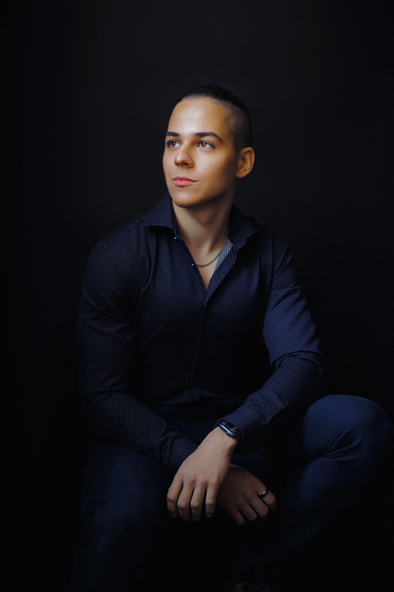

About.
I'm an undergraduate at MIT, intending to study electrical engineering, computer science, and physics. Most of my attention these days goes to AI safety — the technical problem of building systems powerful enough to matter and honest enough to trust.
At MIT I work with Max Tegmark's group on formal verification for mathematical reasoning, with two threads: agent harnesses on Lean 4 for automated theorem proving, and competition-level reasoning benchmarks like PutnamBench. I also help organize MIT AI Alignment, the undergraduate group running reading groups, speakers, and a research track on the ground floor of the field.
Before MIT I spent most of high school doing physics olympiads out of Bucharest. I represented Romania at the International Physics Olympiad in 2024 and 2025, placing 8th overall in 2025 and picking up the prizes for Best Experimental Performance and Best European Participant. Earlier, I earned gold at the European and Asian Physics Olympiads, and at ISEF in 2024 for work on magnetostrictive actuation in oil recovery. In parallel I founded Limitless Smart Learning, a free STEM platform that has reached about 500 Romanian students.
Olympiads taught me how to sit with a problem that doesn't yield. I'm trying to apply the same habit to alignment. Most of the important problems in AI safety are not the kind that come apart cleanly on a first pass — they're the kind you return to for years.
Alongside the research, I make short daily videos on AI safety aimed at people who are smart but haven't had time to learn what researchers actually worry about. The premise is that most of what's out there is either too technical, too alarmist, or too long, and the audience that most needs the ideas is being served worst. If the experiment works, it works. If not, at least I'll have written down what I think is true.
Based in Cambridge, Massachusetts. Originally from Bucharest. Reachable at igstan@mit.edu.